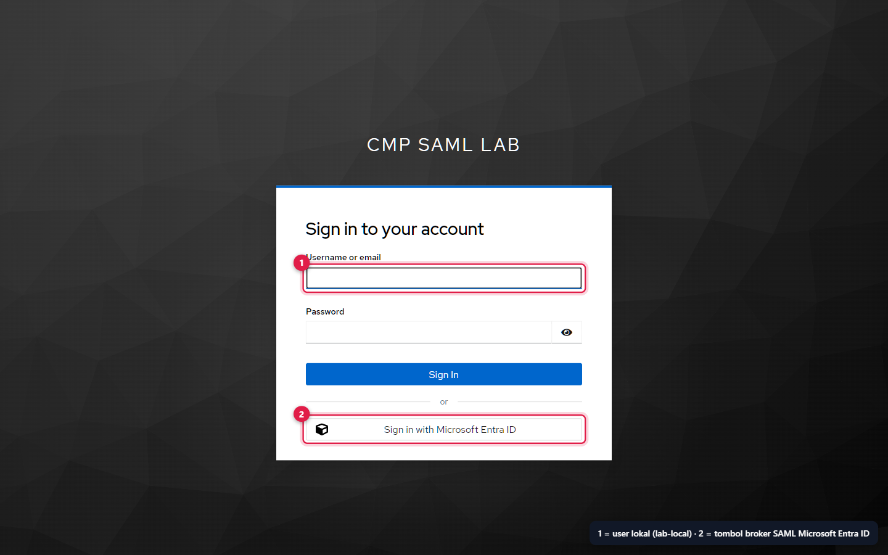
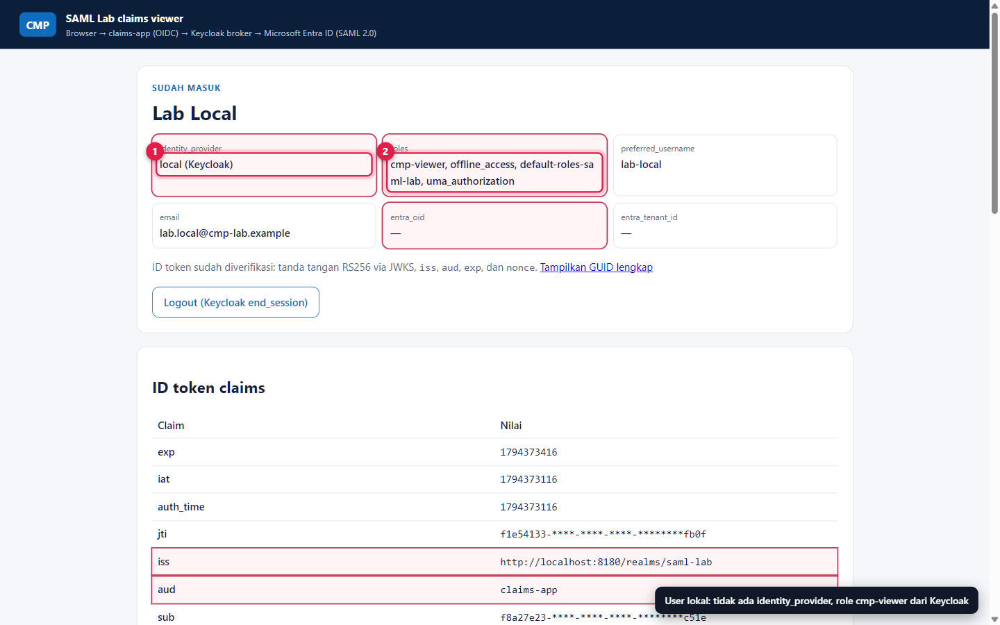
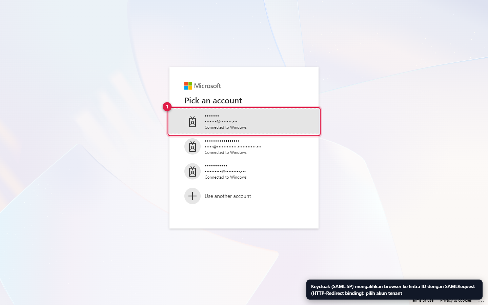
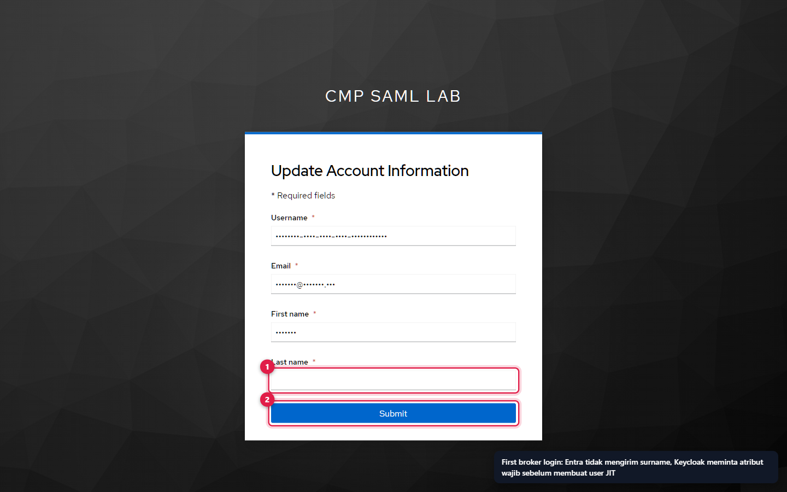
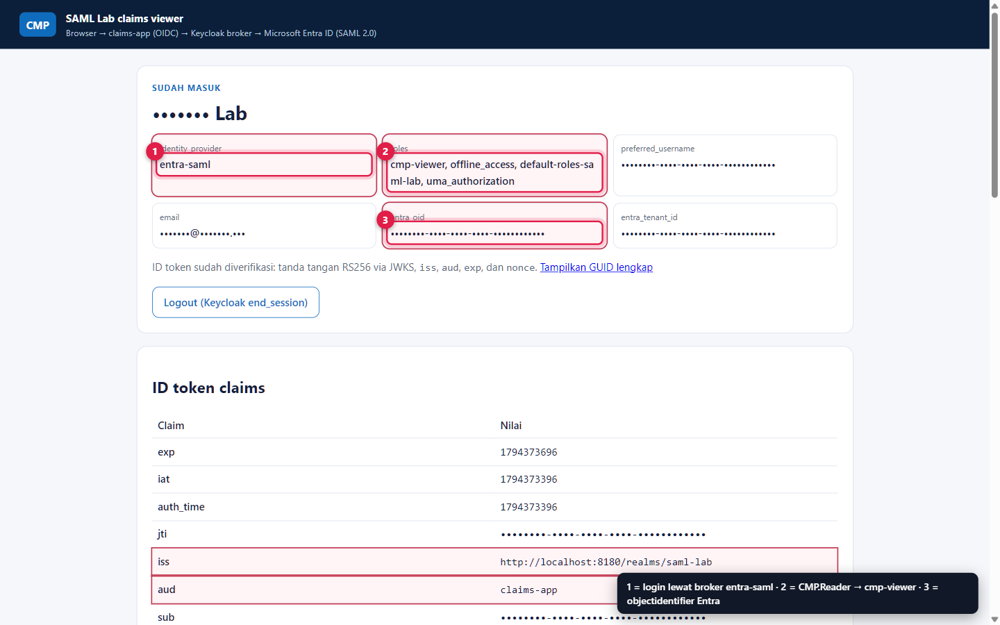

Dua jalur login.
Satu bukti di setiap hop.
Uji user lokal Keycloak sebagai pembanding, lalu login melalui Entra ID dengan SAML. Setelah itu baca pesan SAML yang sebenarnya, kenali error umum, dan kuatkan konfigurasi sebelum dibawa ke produksi.
Jalur A · User lokal Keycloak
TANPA ENTRABuka claims-app
http://localhost:3180→ Masuk dengan akun lokal Keycloak.Login sebagai
lab-localSalin password:
Get-Content labs\saml-entra-keycloak\.local\secrets\local_user_password -Raw | Set-Clipboard.


- Form user lokal (
lab-local). - Tombol broker Sign in with Microsoft Entra ID; jalur B melewati halaman ini lewat
kc_idp_hint.


identity_providertidak ada → ditampilkan local (Keycloak).rolesberisicmp-viewer(diberikan langsung oleh script).entra_oidkosong.
Jalur B · Microsoft Entra ID via SAML
JALUR UTAMALogout, lalu pilih Entra
Klik Logout (Keycloak end_session), kemudian Masuk dengan Microsoft Entra ID (SAML). Gunakan jendela InPrivate jika ingin memaksa pemilihan akun.
Sign-in Entra
Pilih akun yang di-assign ke aplikasi dan selesaikan MFA sesuai Conditional Access tenant.
First broker login (sekali)
Lengkapi Last name bila diminta, lalu Submit.


- Pilih akun tenant. Browser tiba di sini melalui
SAMLRequest(HTTP-Redirect) dari Keycloak.


- Last name kosong karena Entra tidak mengirim klaim
surname. - Submit membuat user JIT dan link ke
entra-saml.


identity_provider = entra-saml.rolesberisicmp-viewerdariCMP.Reader.entra_oid= object ID Entra (disamarkan).
Checklist bukti (hasil uji 11 Nov 2026)
| Hop | Bukti | Di mana | Status |
|---|---|---|---|
| Entra (IdP) | Sign-in interaktif ke aplikasi lab berstatus Success | Gambar 17 | LULUS |
| Entra (IdP) | Assertion ditandatangani, berisi role = CMP.Reader | Capture SAML (tabel di bawah) | LULUS |
| Keycloak (SP) | Tanda tangan diterima, user JIT dibuat, link entra-saml | Gambar 11–13 | LULUS |
| Keycloak (SP) | Realm role cmp-viewer dari mapper | Gambar 14 | LULUS |
| Aplikasi | ID token terverifikasi; identity_provider, roles, entra_oid benar | Gambar 6 | LULUS |
| Pembanding | User lokal tanpa identity_provider tetapi tetap cmp-viewer | Gambar 3 | LULUS |
| Logout | Single logout ke Entra | — | TIDAK DIUJI |
Anatomi pesan SAML (capture live, disamarkan)
L400AuthnRequest (Keycloak → Entra)
<samlp:AuthnRequest ID="…" Version="2.0" IssueInstant="…" ForceAuthn="false"
Destination="https://login.microsoftonline.com/<tenant>/saml2"
AssertionConsumerServiceURL="http://localhost:8180/realms/saml-lab/broker/entra-saml/endpoint"
ProtocolBinding="urn:oasis:names:tc:SAML:2.0:bindings:HTTP-POST">
<saml:Issuer>http://localhost:8180/realms/saml-lab</saml:Issuer>
<samlp:NameIDPolicy Format="urn:oasis:names:tc:SAML:1.1:nameid-format:emailAddress" AllowCreate="true"/>
</samlp:AuthnRequest>| Elemen | Dicocokkan Entra dengan | Error jika salah |
|---|---|---|
Issuer | Identifier (Entity ID) | AADSTS700016 |
AssertionConsumerServiceURL | Reply URL | AADSTS50011 |
ProtocolBinding | Respons dikirim via HTTP-POST | — |
| Tanda tangan | Tidak ada (lab). Wajib bila verifikasi request diaktifkan di Entra | — |
Response dan Assertion (Entra → Keycloak)
| Elemen | Nilai di capture | Dicek Keycloak |
|---|---|---|
| Signature | Response: tidak; Assertion: ya — RSA-SHA256, digest SHA-256, exclusive C14N | Want Assertions signed + Validate signatures |
Status | urn:oasis:names:tc:SAML:2.0:status:Success | Harus Success |
Issuer | https://sts.windows.net/<tenant>/ | = Identity provider entity ID |
Destination, Recipient | Endpoint broker …/broker/entra-saml/endpoint | = endpoint yang menerima |
InResponseTo | ID AuthnRequest | Mencegah replay/unsolicited response |
Audience | http://localhost:8180/realms/saml-lab | = SP entity ID |
NameID | Format emailAddress, nilai UPN | Tidak dipakai sebagai principal (principal = objectidentifier) |
Conditions | NotBefore = IssueInstant − 5 menit; NotOnOrAfter = IssueInstant + 60 menit | ± allowedClockSkew 30 detik |
AuthnContextClassRef | urn:oasis:names:tc:SAML:2.0:ac:classes:Password | Tidak dipakai |
authnmethodsreferences | …/authenticationmethod/password, …/authenticationmethod/x509, http://schemas.microsoft.com/claims/multipleauthn | Tidak dipetakan; petakan jika aplikasi butuh bukti MFA |
| Attributes | tenantid, objectidentifier, name, givenname, displayname, identityprovider, authnmethodsreferences, role | Lihat mapper |
AuthnContextClassRef dengan benar. Nilainya tetap Password meskipun user menyelesaikan MFA. Bukti MFA ada di klaim authnmethodsreferences (multipleauthn). Kebijakan “wajib MFA” sebaiknya ditegakkan oleh Conditional Access di Entra, bukan diperiksa ulang lewat AuthnContext.Cara meng-capture dan decode SAML sendiri
Browser DevTools
F12 → Network → centang Preserve log. Login lewat jalur B. Cari request ke
login.microsoftonline.com/…/saml2(querySAMLRequest) dan POST ke/broker/entra-saml/endpoint(form fieldSAMLResponse) di tab Payload.Atau ekstensi SAML-tracer
Ekstensi Firefox/Chrome yang otomatis men-decode pesan SAML di setiap request.
Decode lokal dengan PowerShell
# SAMLResponse (HTTP-POST): base64 saja $b64 = (Get-Clipboard -Raw).Trim() [Text.Encoding]::UTF8.GetString([Convert]::FromBase64String($b64)) | Set-Content saml-response.xml # SAMLRequest (HTTP-Redirect): URL-decode, base64, lalu raw DEFLATE $raw = [Uri]::UnescapeDataString((Get-Clipboard -Raw).Trim()) $ms = [IO.MemoryStream]::new([Convert]::FromBase64String($raw)) $z = [IO.Compression.DeflateStream]::new($ms, [IO.Compression.CompressionMode]::Decompress) [IO.StreamReader]::new($z).ReadToEnd() | Set-Content saml-request.xml
Troubleshooting
| Gejala | Penyebab paling mungkin | Perbaikan |
|---|---|---|
AADSTS50011 reply URL mismatch | Reply URL Entra ≠ Redirect URI Keycloak (port, alias, atau trailing slash) | Samakan dengan Gambar 7 penanda 1, atau jalankan ulang configure. |
AADSTS700016 application not found | Identifier Entra ≠ SP entity ID Keycloak | Samakan dengan Gambar 8 penanda 1. |
AADSTS50105 user not assigned | Assignment wajib dan user belum di-assign | New-EntraSamlApp.ps1 -AssignUserPrincipalName <upn> atau Users and groups. |
| Keycloak: Unexpected error when handling authentication request to identity provider | Pesan generik; penyebab ada di log | ./Invoke-SamlLab.ps1 -Action logs -Service keycloak, cari IdentityBrokerException / SAML. |
| Keycloak: Invalid signature (di log) | Sertifikat Entra berubah, sedangkan Keycloak memakai sertifikat statis | Jalankan ulang configure (impor metadata baru). |
| Keycloak: assertion expired / not yet valid | Jam host atau WSL bergeser | Sinkronkan jam Windows; wsl --shutdown untuk me-reset jam WSL. |
Import metadata: Network is unreachable | Container tanpa egress (mis. Global Secure Access) | Gunakan mode default script (upload file), bukan -UseMetadataUrl. |
| Form Update account information selalu muncul | Atribut wajib kosong di Entra (surname/mail) | Isi atribut di Entra, atau sesuaikan first broker login flow. |
Role cmp-viewer tidak ada | User di-assign ke role lain / tanpa role, atau nama nilai role salah ketik | Cek Gambar 16 dan nilai attribute.value mapper. |
| claims-app: State mismatch / Login transaction expired | Login dimulai di tab lain atau cookie transaksi kedaluwarsa | Mulai ulang dari http://localhost:3180 di satu tab. |
Dari lab ke produksi
HARDENING| Area | Lab | Produksi |
|---|---|---|
| Transport | HTTP localhost | HTTPS dengan domain sendiri; KC_HOSTNAME, Identifier, dan Reply URL ikut berubah. |
| AuthnRequest | Tidak ditandatangani | Aktifkan Want AuthnRequests signed di Keycloak dan verifikasi request di Entra. |
| Sertifikat Entra | Statis, rotasi manual | Metadata URL dengan egress terkontrol, atau runbook rotasi dengan dua sertifikat paralel dan alert kedaluwarsa. |
| Enkripsi assertion | Off | Pertimbangkan jika assertion melewati perantara yang tidak dipercaya. |
| Scope token aplikasi | Full scope (semua realm role) | Matikan Full scope allowed pada client; beri role scope mapping hanya cmp-viewer/cmp-admin. |
| Admin Keycloak | Admin bootstrap sementara lab-admin | Buat admin permanen (sebaiknya juga lewat Entra), hapus admin sementara. |
| Akses Entra | Assignment per user | Assignment per grup, Conditional Access untuk aplikasi, access review berkala. |
| Logout | Hanya sesi Keycloak/aplikasi | Uji single logout dan konfigurasikan Logout URL di Entra sesuai kebutuhan. |
Cleanup
cd labs\saml-entra-keycloak\scripts
./Invoke-SamlLab.ps1 -Action down # stop container, data tetap
./Invoke-SamlLab.ps1 -Action reset # stop dan hapus volume database
./Remove-EntraSamlApp.ps1 -Purge # hapus app registration + enterprise app, kosongkan recycle bin, hapus .local\entra.jsonHapus juga sesi browser (InPrivate) dan file capture SAML yang Anda buat.